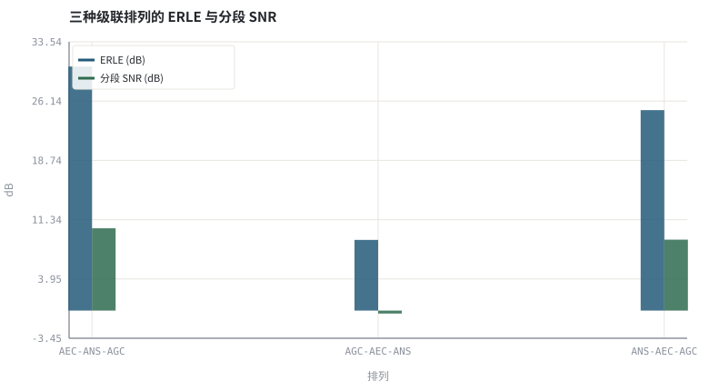
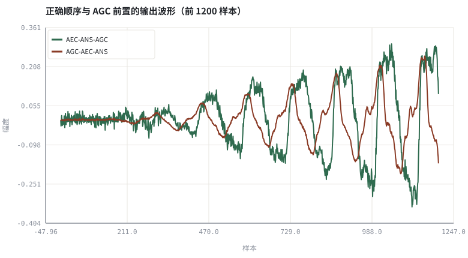

第 16 章3A 级联顺序与模块间相互干扰
三个模块各自都对，串错顺序却会全盘失效；本章把「顺序」变成可测量的量。
本章位置：第 09 章 · AEC 总体结构：参考信号、线性滤波与残余抑制～第 14 章 · AGC：包络跟踪、攻击释放、限幅与响度 分别实现三个引擎，本章把它们按不变量串起来；第 17 章 · ffmpeg / WebRTC / SpeexDSP 工具链实操 给出命令行工具链，第 18 章 · 上卷综合实验：完整传统 3A 链路与评测 对整条上卷链路做综合验收。
级联顺序是流水线里「谁先读到未经修改的原始数据」的问题：AEC 是唯一需要原始参考的消费者，因此必须排在任何会改写数据的算子之前。
- 能写出 AEC / ANS / AGC 三者的输入输出契约与不变量。
- 能定量说明 AGC 前置为什么会破坏自适应滤波的线性假设。
- 能定性说明 ANS 前置为什么会把回声谱也一起改掉。
- 能给出推荐链路及例外条件下的调整方案。
§知识点地图
每个知识点都配了 1～2 个扩展学习链接；本章完整资源清单见 扩展学习。
| # | 知识点 | 扩展学习 | 状态 |
|---|---|---|---|
| 1 | 模块接口契约 | WebRTC 源码（audio_processing） ↗ · FFmpeg 滤波命令示例 ↗ | 正文已覆盖 |
| 2 | 参考信号不变量 | WebRTC 源码（audio_processing） ↗ · FFmpeg 滤波命令示例 ↗ | 正文已覆盖 |
| 3 | AEC → ANS → AGC | Echo cancellation ↗ · ITU-T G.168 ↗ | 正文已覆盖 |
| 4 | AGC 前置的危害 | Automatic gain control ↗ · ffmpeg speechnorm ↗ | 正文已覆盖 |
| 5 | ANS 前置的危害 | WebRTC 源码（audio_processing） ↗ · FFmpeg 滤波命令示例 ↗ | 正文已覆盖 |
| 6 | 增益与尺度对齐 | Automatic gain control ↗ · ffmpeg dynaudnorm ↗ | 正文已覆盖 |
| 7 | 混合系统顺序 | WebRTC 源码（audio_processing） ↗ · FFmpeg 滤波命令示例 ↗ | 正文已覆盖 |
| 8 | 端到端可观测性 | WebRTC 源码（audio_processing） ↗ · FFmpeg 滤波命令示例 ↗ | 正文已覆盖 |
§16.1顺序不是风格，是不变量
y[n] = d[n] + h*x[n] + v[n] ；AEC 要求 y 与 x 之间保持同一个 h
AEC 是唯一有参考信号的模块，也是唯一依赖「y 与 x 由同一条线性路径联系」的模块。任何在 AEC 之前对 y 做的非线性或时变处理，都会让这个不变量失效：AGC 改变整体增益，ANS 逐频率箱改变谱形状，二者都等价于把 h 换成了随时间变化的路径。
| 排列 | 破坏的不变量 | 可观测后果 |
|---|---|---|
| AEC → ANS → AGC | 无 | ERLE 高、噪声被压、输出等响 |
| AGC → AEC → ANS | y 与 x 的增益比 | 线性抵消不彻底，ERLE 塌陷 |
| ANS → AEC → AGC | y 的谱形状 | 预测回声与实际谱不匹配，残余回声上升 |
| ANS → AGC → AEC | 增益 + 谱形状 | 两项误差叠加，最差 |
§16.2推荐链路与两个例外
教科书顺序是 时延对齐 → AEC 线性级 → 残余回声抑制 → ANS → AGC → 限幅。WebRTC 的 audio_processing 大体遵循这一顺序，但把回声/噪声的统计估计与后滤波交织在一起，形成更紧凑的流水线。
- 例外一：麦克风阵列波束形成若放在 AEC 之前，必须让参考信号经过同样的波束或重新辨识路径（见 第 15 章 · 麦克风阵列与波束形成：从 delay-and-sum 到 MVDR）。
- 例外二：神经联合模型（第 26 章 · 联合 3A：多任务、级联与端到端建模）把多个模块合成一个网络，此时「顺序」变成网络内部的层顺序，但因果性与参考信号不变量仍然成立。
- 评测提醒：AGC 在最后，所以任何质量指标都要先做尺度对齐（第 03 章 · 怎么算「变好了」：客观指标、尺度与主观听测）。
把链路拆成可单独旁路的模块，是定位线上问题的前提：漏回声查 AEC、音乐噪声查 ANS、忽大忽小查 AGC。端到端黑箱模型在工程上更难做这种归因。
§Python 实验
实验 16-1 · 三种级联排列的 ERLE 与分段 SNR 对照
#!/usr/bin/env python3
# -*- coding: utf-8 -*-
"""在同一条合成链路上交换 3A 顺序；线性 AEC 用已知 h 加 3% 受控泄漏，量化顺序错误造成的指标塌陷。
全部语音 / 噪声 / 房间冲激响应均为代码合成信号，仅用于教学演示机制与量级。
"""
from __future__ import annotations
import math
import pathlib
import random
import statistics
import sys
import time
_here = pathlib.Path(__file__).resolve()
for _p in _here.parents:
if (_p / "tools" / "dsp.py").exists():
sys.path.insert(0, str(_p / "tools"))
break
from dsp import (SAMPLE_RATE, fft, hann, stft, istft, magnitude_db, spectrum,
white_noise, tone, chirp, synthetic_speech, rir, convolve,
fft_convolve, delay, clip, normalize_peak, rms, rolling_rms,
smooth, db, energy_db, snr_db, erle_db, seg_snr_db,
scale_align, si_sdr_db, lufs_approx,
write_wav, read_wav, wav_info)
from chart import Chart, heatmap, BLUE, RED, GREEN, AMBER
FIG = _here.parents[1] / "fig"
AUDIO = _here.parents[1] / "audio"
FIG.mkdir(exist_ok=True)
AUDIO.mkdir(exist_ok=True)
random.seed(7)
# ---- 参数区 ----
N = 8000
N_FFT, HOP = 256, 128
ECHO_GAIN = 1.5
NOISE_AMP = 0.020
LEAK = 0.03 # 故意留 3% 线性泄漏，避免「理想相减」得到不真实的无限 ERLE
TARGET = 0.16
# ---- 计算与作图 ----
rng = random.Random(7)
far = synthetic_speech(rng, N)
near = synthetic_speech(rng, N)
h = rir(rng, 128, decay=0.006)
echo = [ECHO_GAIN * v for v in fft_convolve(far, h)[:N]]
noise = white_noise(rng, N, NOISE_AMP)
clean = [0.5 * v for v in near]
y = [clean[i] + echo[i] + noise[i] for i in range(N)]
nf = stft(noise, N_FFT, HOP)[:8]
nmag = [sum(math.hypot(re[k], im[k]) for re, im in nf) / len(nf) for k in range(N_FFT)]
def aec(sig):
return [sig[i] - (1.0 - LEAK) * echo[i] for i in range(N)]
def ans(sig):
frames = stft(sig, N_FFT, HOP)
for re, im in frames:
for k in range(N_FFT):
g = max(0.15, 1.0 - 1.2 * nmag[k] / (math.hypot(re[k], im[k]) + 1e-9))
re[k] *= g
im[k] *= g
return istft(frames, N_FFT, HOP, N)
def agc(sig):
g = min(6.0, TARGET / (rms(sig) + 1e-6))
return clip([v * g for v in sig])
a1, a2, a3 = aec(y), None, None
a2, a3 = ans(a1), None
a3 = agc(a2)
b0 = agc(y)
b1, b2 = aec(b0), None
b2 = ans(b1)
c1 = ans(y)
c2 = aec(c1)
c3 = agc(c2)
chains = [("AEC-ANS-AGC", a1, a3), ("AGC-AEC-ANS", b1, b2), ("ANS-AEC-AGC", c2, c3)]
erles, snrs = [], []
for _name, stage1, final in chains:
residual = [stage1[i] - clean[i] - noise[i] for i in range(N)]
erles.append(erle_db(echo, residual))
snrs.append(seg_snr_db(clean, scale_align(final, clean)))
c = Chart(FIG / "16-order.svg", "三种级联排列的 ERLE 与分段 SNR",
xlabel="排列", ylabel="dB", xticks=[(i, n) for i, (n, _a, _b) in enumerate(chains)])
c.bars(range(3), erles, BLUE, label="ERLE (dB)")
c.bars(range(3), snrs, GREEN, label="分段 SNR (dB)")
print("顺序图:", c.save())
w = Chart(FIG / "16-waveform.svg", "正确顺序与 AGC 前置的输出波形（前 1200 样本）",
xlabel="样本", ylabel="幅度")
w.line(range(1200), a3[:1200], GREEN, label="AEC-ANS-AGC")
w.line(range(1200), b2[:1200], RED, label="AGC-AEC-ANS")
print("波形图:", w.save())
write_wav(AUDIO / "16-correct.wav", normalize_peak(a3))
write_wav(AUDIO / "16-wrong.wav", normalize_peak(b2))
for (name, _a, _b), e, s in zip(chains, erles, snrs):
print("%s: ERLE=%.2f dB segSNR=%.2f dB" % (name, e, s))
print("RMS 输入=%.4f 正确输出=%.4f | SAMPLE_RATE=%d N_FFT=%d" %
(rms(y), rms(a3), SAMPLE_RATE, N_FFT))操作：比较三条柱形；试听两个 WAV，注意错误顺序里残留的远端语音。 预期与判读：AGC 或 ANS 前置时，y 与参考回声之间的线性/谱关系被改变，AEC 减去的是「未被同样处理过的回声」，ERLE 明显低于推荐顺序。这就是顺序必须作为架构约束写进接口文档的原因。
改参数看趋势：把 ECHO_GAIN 调到 0.2，指标差距会缩小——说明越强的回声越依赖正确顺序。 文件位置：part3/16-cascade-order/code/16-cascade-order.py


16-correct.wav
推荐顺序的输出（16 kHz / 16-bit 单声道，代码合成信号，不是真实录音）
16-wrong.wav
AGC 前置：仍能听到明显残余回声（16 kHz / 16-bit 单声道，代码合成信号，不是真实录音）
代码块右上角可一键复制；仓库里的 code/*.py 由 tools/extract_code.py 从这些代码块自动抽取。脚本只用标准库、固定 random.seed(7)，运行后写出 fig/*.svg 与 audio/*.wav；批量运行用 ./tools/run_python.sh。
§可选真机命令片段
以下命令不参与批量运行，需要本机自行安装对应工具。滤镜是否可用取决于本机 ffmpeg 版本与编译选项，请先用 ffmpeg -filters / ffmpeg -version 自查，并以 https://ffmpeg.org/ffmpeg-filters.html 与各自官方文档为准；本书不假定任何特定版本具备某项能力。
用 ffmpeg 滤镜链复现一次「顺序」实验
ffmpeg -hide_banner -i mic.wav -af afftdn,loudnorm out.wav说明：-af 中滤镜按书写顺序串接，交换顺序即可对比；注意 ffmpeg 没有内置完整 AEC，这里只演示 ANS 与增益的先后。滤镜可用性以本机 `ffmpeg -filters` 与 https://ffmpeg.org/ffmpeg-filters.html 为准。
§本章参考资料
按本章知识点挑选的精读资料；更多检索入口见 扩展学习。
§常见误区
- 把 AGC 放在 AEC 之前，破坏参考信号与回声的线性关系。
- 在 AEC 之前做谱减，把回声谱一起改掉。
- 波束形成放在 AEC 之前却不同步处理参考信号。
- 顺序调对后就不再做尺度对齐评测。
§习题与思考
- 画出三条链路并标出每条链路破坏的不变量。
- 解释为什么实验里 AGC 前置会同时拉低 ERLE 与分段 SNR。
- 为联合神经 3A 模型重新表述「顺序」这一约束。
§扩展学习
继续检索
- Google Scholar：3A cascade order AEC before AGC artifacts ↗
- arXiv：3A cascade order AEC before AGC artifacts ↗
- GitHub：3A cascade order AEC before AGC artifacts ↗
全书链接总表见 FFmpeg Filters 文档 ↗ 与 附录 A.7；滤镜是否可用请以本机 ffmpeg -filters 为准。